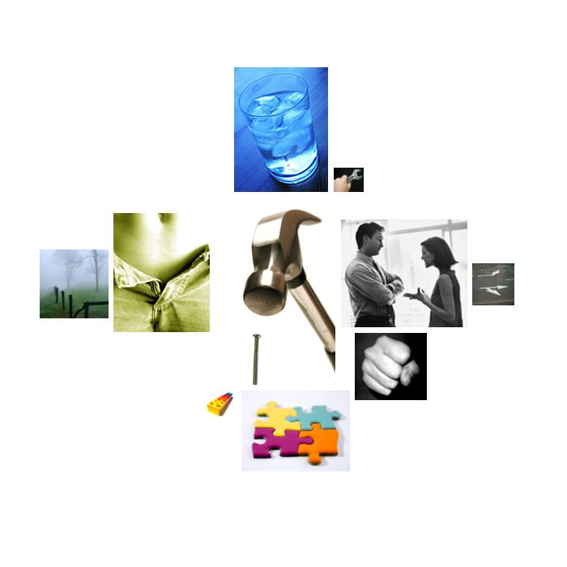

bush-debate1.txt
  hard
hard hard, hard, hardest, hard, hard, hard, hard, hard, hard, hard, hard, hard, hard, hard, hardest, hardest, hard, hard, hard, hard, hard, hard, hard
 social_behavior
social_behavior thank, say, said, election, answer, help, agree, protect, declared, said, agree, committing, tell, said, speaks, says, talks, say, help, helping, visiting, signals, help, elections, respond, thank, says, say, message, message, message, follow, promises, protect, communicating, services, protection, protect, protect, talking, protect, tell, tell, protect, responsibility, answer, tells, elections, said, elected, message, thank, help, follow-up, says, help, message, say, message, help, tell, said, invited, helping, elections, says, say, say, says, call, message, please, talk, follow, says, talk, follow, says, follow, says, call, helped, called, said, signals, signals, says, elections, says, helping, helping, helping, told, said, said, excuse, calls, said, called, said, said, say, spoke, speaking, committed, met, told, told, say, help, say, say, follow, say, talks, says, speech, treat, messages, elections, suggesting, say, said, commit, commit, protect, protect, speaking, say, messages, said, talk, speaking, messages, say, answer, protect, talks, treaties, tell, say, sworn, agreement, agreed, dialogue, influence, speaking, agreement, dialogue, talks, message, convince, message, allows, talks, talks, agreement, agreement, agreement, said, said, agree, committed, aid, help, commit, help, agreement, agree, committing, helped, help, aid, help, service, says, messages, messages, signals, messages, signals, messages, signals, service, protect, thank, agree, called, agree, called, information, convinced, tell, help, protect, help, tell, talks, talks, convincing, talks, said, signal, told, comment, discuss, able, told, discussing, remind, help, say, pardon, said, saying, tell, thank, services, plead, ask
 cold
cold northern, north, north, north, north, north, north, north, north-south, north, north, north
 sex
sex peninsula, peninsula
 abstraction
abstraction known, them, know, them, doctrine, understand, believe, believe, know, know, know, understand, know, know, believe, them, know, why, understands, why, reason, judgment, understand, consequences, decided, consequences, believe, why, fact, facts, believed, fact, why, why, sure, understand, them, why, plan, reason, believes, believes, believe, plan, resolved, plan, think, know, sure, possible, thinking, them, themselves, believe, believes, them, know, possible, know, them, example, think, certainly, plan, know, think, them, them, know, think, them, them, them, them, thought, them, planning, thought, them, understand, think, know, know, plan, plan, plan, something, determine, decide, decide, decided, mistake, mistake, think, think, think, know, judgment, think, think, know, know, know, know, think, know, knowing, caused, thought, understand, understand, understood, understood, distinguishes, think, think, think, know, understand, plan, knows, determined, sure, believe, believe, reason, why, understand, them, why, why, why, understand, think, know, believe, understood, doctrine, think, know, know, think, caused, judgment, difference, opinion, sure, certain, think, difference, opinion, difference, opinions, judges, understand, certain, think, think, certainly, decided, decides, think, them, them, fact, fact, guess, fact, sure, something, believe, know, certainty, beliefs, beliefs, them, think, learned, otherwise, why, information, effective, research, mistake, think, cause, mistake, think, think, think, perhaps, believe, why, resolve, them, understands, important, important, establish, effective, opinion, choices, think, important, know, opinion, know, truth, them, believe, believe, believe, believe, example, may
 aggression
aggression threat, threats, weapons, destruction, defeat, hate, killers, kill, kill, attack, defeat, enemy, defeat, doubt, enemy, enemy, defeat, hatred, fighting, beat, defeat, defeat, enemy, threat, doubts, harm's, deceiving, hatred, strike, weapons, destruction, war, war, killer, attacks, war, war, fight, fight, war, war, enemy, hurt, hurt, stability, war, war, harm's, war, killed, war, war, war, war, war, whip, fight, fighting, cut, invasion, hatred, threat, doubted, war, war, weapons, destruction, harm's, killed, harm's, war, threats, threat, defeat, hatred, enemy, war, war, war, enemy, defeat, criticized, disagree, disagree, war, fighting, fighting, defeat, war, enemy, attacked, doubt, doubt, threat, weapons, attacked, weapons, weapons, breaking, stabilize, war, threat, weapons, destruction, weapons, destruction, weapons, destruction, threats, opposed, enemy, weapons, war, gunned, enemy, disagreements, disagree, threat, threat, army, fight
 diffusion
diffusion screens, mistake, mistake, mistake, mistake, uncertainty
 random_movement
random_movement shake, spread, spread, spread, spread, spread
 concreteness
concreteness at, wherever, longer, where, out, here, at, at, at, at, at, off, place, place, away, beside, out, front, place, central, at, at, place, place, southern, at, at, out, places, place, out, back, side, side, cornerstone, at, place, at, at, place, at, at, place, at, side, side, long, at, place, over, place, where, off, place, where, place, off, positions, positions, at, at, off, at, position, positions, positions, wherever, long, long, back, at, at, place, positions, here, forward, long, across, central, apart, out, off, at, round, where, where, out, besides, over, south, open, closely, where, where, place, back, long, over, at, situation, out, long-suffering, out, positions, positions, off, centerpieces, over, out, places, central, long, longer, along, besides, away, central, western, situation, where, forward, western, over, at, at, toward, long, here, at, over, middle, east, over
 instrumental_behavior
instrumental_behavior pursued, pursue, pursuing, achieve, win, use, work, tried, trying, work, makes, work, make, effort, make, making, trying, succeed, succeed, succeed, spending, money, use, succeed, win, pay, money, spending, worked, spent, working, make, job, work, working, work, job, succeed, achieved, perform, work, win, trying, efforts, build, succeed, soldiers, achieved, job, work, work, achieve, achieve, achieve, soldiers, work, efforts, making, making, work, work, work, work, make, uses, succeed, finish, make, win, win, win, achieve, job, work, try, find, work, job, work, work, trying, try, trying, make, succeed, win, win, use, use, work, work, work, use, use, use, tried, making, test, test, make, trying, makes, working, make, found, work, work, work, worked, delivering, worked, working, working, make, record, works, trying, succeed, make, selling, work, makes, found, make, working, build, build, work, achieve
thank, say, said, election, answer, help, agree, protect, declared, said, agree, committing, tell, said, speaks, says, talks, say, help, helping, visiting, signals, help, elections, respond, thank, says, say, message, message, message, follow, promises, protect, communicating, services, protection, protect, protect, talking, protect, tell, tell, protect, responsibility, answer, tells, elections, said, elected, message, thank, help, follow-up, says, help, message, say, message, help, tell, said, invited, helping, elections, says, say, say, says, call, message, please, talk, follow, says, talk, follow, says, follow, says, call, helped, called, said, signals, signals, says, elections, says, helping, helping, helping, told, said, said, excuse, calls, said, called, said, said, say, spoke, speaking, committed, met, told, told, say, help, say, say, follow, say, talks, says, speech, treat, messages, elections, suggesting, say, said, commit, commit, protect, protect, speaking, say, messages, said, talk, speaking, messages, say, answer, protect, talks, treaties, tell, say, sworn, agreement, agreed, dialogue, influence, speaking, agreement, dialogue, talks, message, convince, message, allows, talks, talks, agreement, agreement, agreement, said, said, agree, committed, aid, help, commit, help, agreement, agree, committing, helped, help, aid, help, service, says, messages, messages, signals, messages, signals, messages, signals, service, protect, thank, agree, called, agree, called, information, convinced, tell, help, protect, help, tell, talks, talks, convincing, talks, said, signal, told, comment, discuss, able, told, discussing, remind, help, say, pardon, said, saying, tell, thank, services, plead, ask